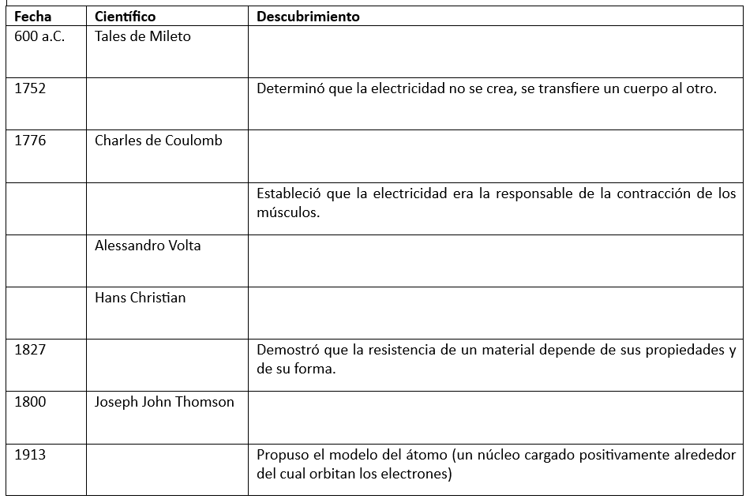

¿Alguna vez te has preguntado cómo funcionan los dispositivos electrónicos que usamos a diario, como las luces, los teléfonos o los videojuegos? En este espacio, colgaremos algunas actividades que te ayudarán a explorar el fascinante mundo de la electricidad y la electrónica.
Observa el siguiente video para comprender cómo se genera la electricidad.
En el siguiente enlace encontrarás una línea de tiempo donde se explican los descubrimientos y avances más importantes de la electricidad (click aqui).
Ahora, dibuja y completa el siguiente cuadro en tu carpeta:
Ahora, responde las preguntas en tu carpeta: